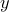
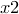
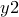
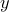
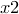
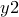
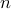

Arrows may be placed on plots using the set arrow command, which has similar syntax to that used by gnuplot. A simple example would be:
set arrow 1 from 0,0 to 1,1
The number ‘1’ immediately following ‘set arrow’ specifies an identification number for the arrow, allowing it to be subsequently removed via:
unset arrow 1
or equivalently, via:
set noarrow 1
In Pyxplot, this syntax is extended; the set arrow command can be followed by the keyword ‘with’, to specify the style of the arrow. For example, the specifiers ‘nohead’, ‘head’ and ‘twohead’, after the keyword ‘with’, can be used to make arrows with no arrow heads, normal arrow heads, or two arrow heads. ‘twoway’ is an alias for ‘twohead’. For example:
set arrow 1 from 0,0 to 1,1 with nohead
In addition, linestyles and colours can be specified after the keyword ‘with’:
set arrow 1 from 0,0 to 1,1 with nohead \ linetype 1 c blue
As in gnuplot, the coordinates for the start and end points of the arrow can be specified in a range of coordinate systems. ‘first’, the default, measures the graph using the  - and -axes. ‘second’ uses the - and -axes. ‘screen’ and ‘graph’ both measure in centimetres from the origin of the graph. In the following example, we use these specifiers, and specify coordinates using variables rather than doing so explicitly:
- and -axes. ‘second’ uses the - and -axes. ‘screen’ and ‘graph’ both measure in centimetres from the origin of the graph. In the following example, we use these specifiers, and specify coordinates using variables rather than doing so explicitly:
x0 = 0.0
y0 = 0.0
x1 = 1.0
y1 = 1.0
set arrow 1 from first x0, first x1 \
to screen x1, screen x1 \
with nohead
In addition to these four options, which are those available in gnuplot, the syntax ‘axisn’ may also be used, to use the th - or -axis – for example, ‘axis3’. This allows arrows to reference any arbitrary axis on plots which make use of large numbers of parallel axes (see Section 3.3.1).